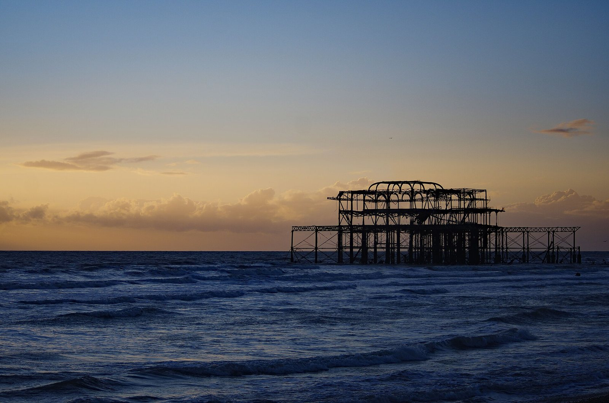

View 36 of 66
The latest damaged view of the pier, No. 36
Originally: Brighton , West Pier at dusk - geograph.org.uk - 8207108 by Jim Osley, 2025-12-03
Condition report (2025): less pier than the last view. More sea.
- Artist
- Jim Osley
- Original title
- Brighton , West Pier at dusk - geograph.org.uk - 8207108
- Source
- Wikimedia Commons
- Licence
- CC BY-SA 2.0

Discuss this view
GitHub sign-in needed to comment.